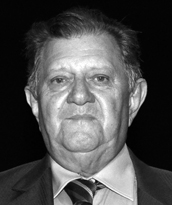

<style>
section {
        display: flex;
        flex-direction: row;
        align-items: center;
        justify-content: center;
        gap: 40px;
        margin: 40px 0;
    }


    .conteudo {
        max-width: 1000px;
        font-family: Arial, sans-serif;
        font-size: 16px;
        line-height: 1.6;
        color: #333;
        text-align: justify;
    }

    .conteudo p {
        
        margin-bottom: 16px;
    }
    img {
        width: 300px;
        height: auto;
        border-radius: 8px;
    }
</style>
<section>

    <div class="conteudo">

        <h2>CLEMENTE BARROS NETO</h2>
        
        <p>Natural de Porto Nacional/TO, formado em Engenharia Agronômica pela Universidade Federal de Goiás - UFG. Possui pós-graduação em Comunicação Rural pela Universidade de São Paulo - USP. Atuou em diversas funções técnicas e administrativas ao longo de sua carreira. Foi secretário estadual de Recursos Hídricos e Meio Ambiente do Tocantins e secretário municipal de Agricultura de Palmas. No Estado de Goiás, ocupou os cargos de diretor técnico e presidente da EMATER, além de ter sido delegado federal da Cibrazem. Teve participação ativa em entidades de classe, tendo sido presidente da Sociedade Brasileira de Zootecnia. Também exerceu papel relevante no movimento estudantil regional como presidente da Casa do Estudante do Norte Goiano (CENOG).
        </p>
        
    </div>
    <div class="imagem">
        
        </div>

    

    


</section>